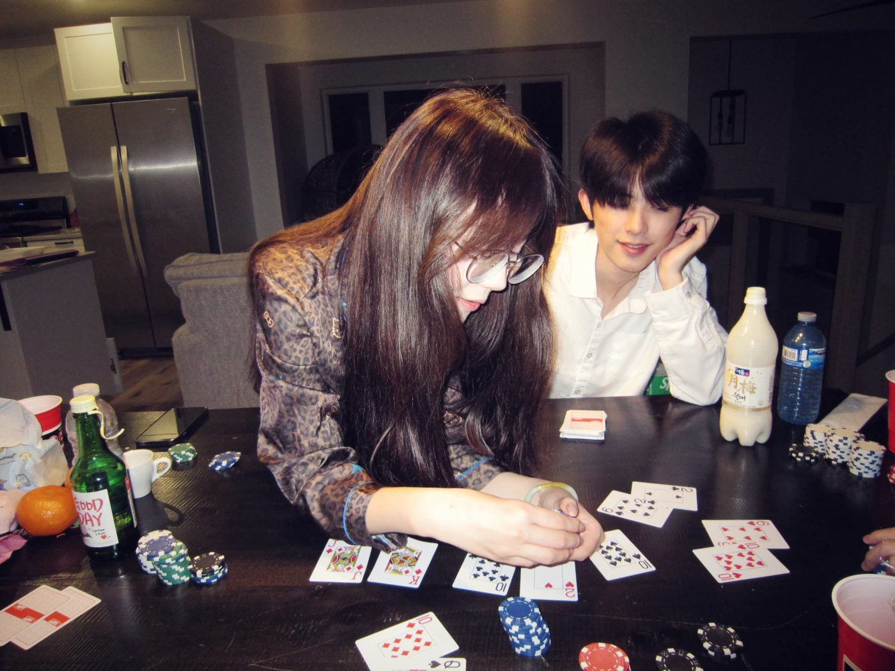
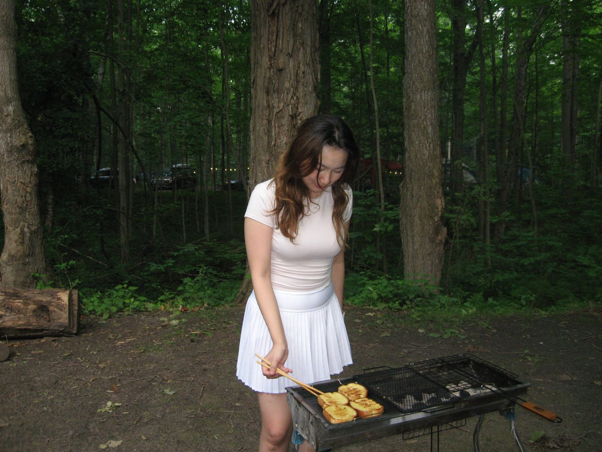

Through my lens
A CCD is slow, a little soft, and there's nothing to fix in post. So the work happens before the shutter: getting someone comfortable enough to stop performing. It's the same skill as everything else I do.
Pick them up, shuffle them around, click one to look closer. ↓

